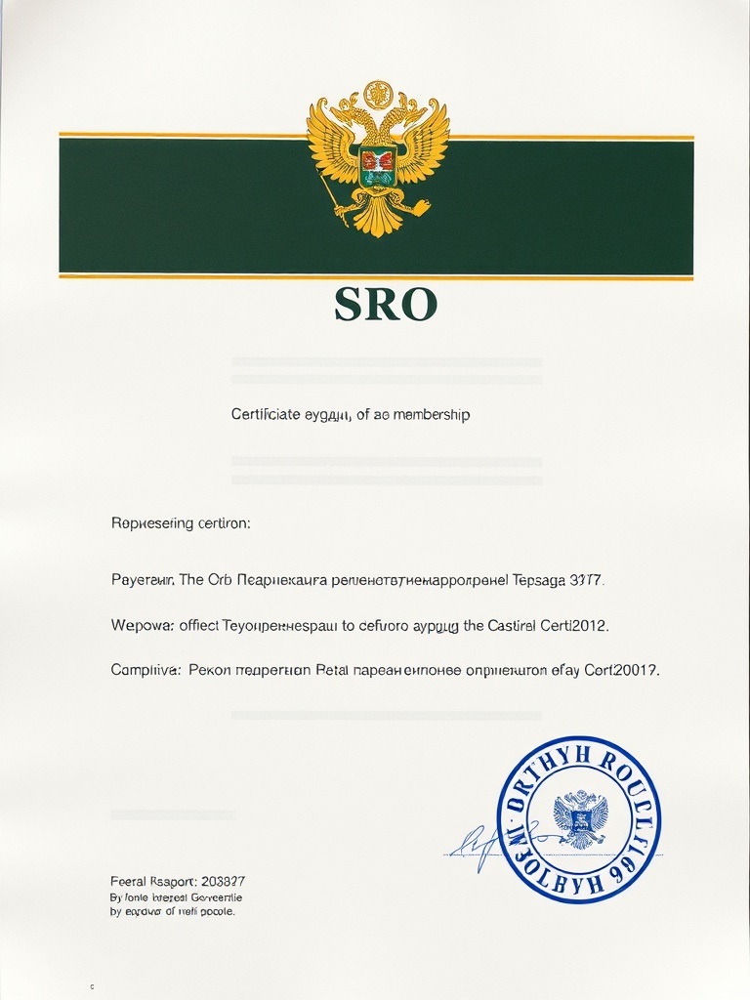
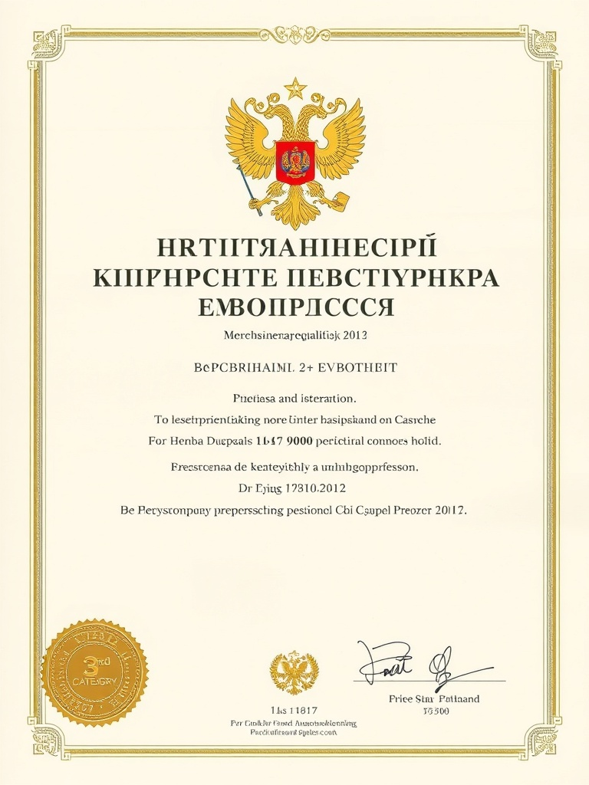
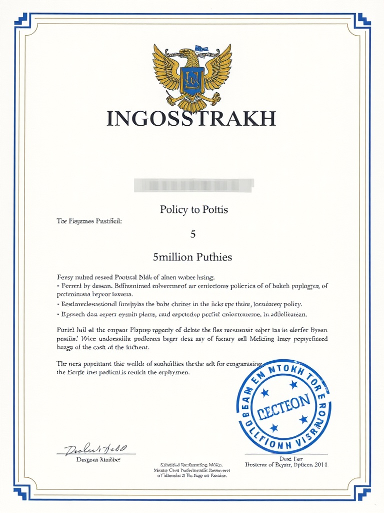
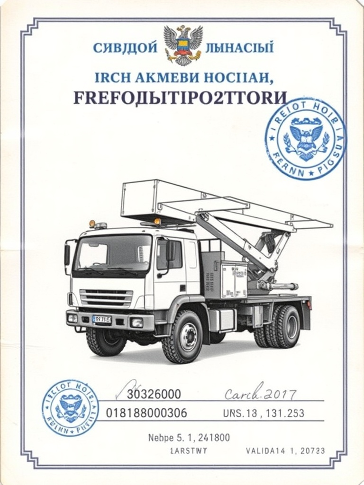

На объект приезжает не оператор колл-центра и не «менеджер по продажам». Старший бригадир принимает решения на месте, согласует объём в чате с фото и подписывает акт — это и есть «порядок под ключ», без посредников.
на рынке Москвы и МО — с 2020
арбористика, крыши, мусор, демонтаж — одной бригадой
радиус выезда от МКАД с собственной техникой
аварийная бригада на бурелом, наледь, сосульки
Один заказ — одна бригада. Без передачи между подрядчиками, без «извините, это другой отдел». Каждая роль — со своими допусками и зоной ответственности.
Принимает решения по объёму на месте, ведёт чат с клиентом, подписывает акт. Если объём вырос против сметы — клиент видит это до подписания, не после.
Спил частями с альпснаряжением, кронирование, удаление аварийных деревьев. Удостоверения и СИЗ — комплект на каждого, сертификаты публикуются в разделе СРО.
Чистка снега, наледи и сосулек на МКД и частных домах. Стопперы, обвязка, страховочные системы. Работа в зоне с ограждением и присутствием прораба.
Автовышка 22 м, манипулятор 7 т, мини-экскаватор для расчистки и демонтажа, контейнеровозы 8–27 м³. Своя техника — без посредников и наценок субподряда.
Ручной демонтаж, сортировка строймусора по фракциям, погрузка КГМ и веток в контейнер. Полный комплект СИЗ — каска, перчатки, защитные очки.
Бурелом, упавшее дерево, наледь над входом — выезжаем в течение 2 часов от заявки. Работаем по согласованию с УК и ГЖИ, после выезда даём акт и фото.
Когда вы звоните утром в среду, к вам приедет один из них. С именем, опытом и зоной ответственности — без подмены на «свободного исполнителя».
Сергей К.
Старший бригадир · Арбористика
Удалил 200+ аварийных деревьев в МО. Спокойно решает спорные ситуации с соседями и УК — клиенту в чат прилетает фото и согласование, не «скандал».
12 лет 200+ объектов Раменское
«Если дерево упирается в провода — это не ваша проблема. Это наша задача и наша ответственность по 152-ФЗ.»
Алексей М.
Кровельщик-промальп
Работа на высоте до 30 м, 7-я группа допуска по ПОТ Р-016. Чистит крыши МКД и частных домов от снега и наледи без повреждения кровли — есть фото-акты до и после.
8 лет 70+ МКД Север МО
«Сосульки — это не косметика, это безопасность. Зона под крышей — обязательно ограждение и наблюдатель.»
Дмитрий В.
Оператор спецтехники
Свой автопарк — манипулятор 7 т, автовышка 22 м, мини-экскаватор. Знает как заехать на узкий двор СНТ и не повредить грядки соседа.
10 лет Кат. C, E 4 единицы техники
«Полтора часа на согласование заезда — лучше, чем потом полдня на ремонт чужого забора.»
Игорь П.
Бригадир · Демонтаж и вывоз
Расчистка участка, демонтаж сараев и старых построек, сортировка строймусора по фракциям. Сдаёт стройотходы по 89-ФЗ — есть талоны полигона на каждый рейс.
6 лет 89-ФЗ Юго-Восток МО
«Хороший демонтаж — когда после нас остаётся ровный участок и подписанный акт, а не куча на дороге.»
На объект может приехать другая бригада с теми же допусками и опытом — старшего бригадира всегда называем за день до выезда, чтобы клиент знал имя и контакт заранее.
На сложных объектах — авария, осложнённый спил, договор на сезон с УК — выезжает бригадир с расширенным допуском. Согласование решений идёт через мессенджер с фото в реальном времени: клиент видит, что происходит на месте, до того как подписывать акт.
Если объём вырос против сметы — это видно в чате до подписания. Не «вы должны ещё», а «вот фото причины, вот варианты, что выбираете». На этом этапе клиент может остановить работу — и заплатит только за выполненный объём по факту.
У нас есть страхование ответственности до 5 млн ₽ — если в процессе работ что-то ломается (забор соседа, плитка во дворе, провода), это не «договоримся как-нибудь», а фиксированная процедура с актом и компенсацией.
Бригадир делает фото проблемы, отправляет в WhatsApp / Telegram с короткой формулировкой. Клиент видит в течение 5 минут.
Бригадир предлагает варианты с ценой за каждый. Клиент выбирает. Никаких «давайте я там сделаю, потом разберёмся».
После выполнения — фото-акт, подпись прораба и клиента. Документы уходят в кабинет, чек — на email.
СРО, страховка ответственности, удостоверения арбористов и операторов техники — всё в публичном доступе на странице «СРО и лицензии». Бригадир показывает копии перед началом работ.

✓
✓
✓
✓4 единицы — наш парк, не аренда. Это значит фиксированный график, никакой зависимости от свободных слотов у субподрядчика и никакой наценки сверху.
Высота · 22 м
Спил частями, кронирование высоких деревьев, чистка водостоков на МКД до 7 этажа.
Грузоподъёмность · 7 т
Перемещение крупных стволов и веток, погрузка строймусора в контейнер без ручного труда.
Под бытовой и стройотход
Подача за 24 часа, вывоз с талоном полигона по 89-ФЗ для отчётности УК.
Корчевание · расчистка
Удаление пней с корнем, расчистка зарослей, выравнивание участка после демонтажа.
«Сергей приехал в субботу утром, посмотрел три берёзы, прямо в чат прислал смету и фото, какие части пойдут на спил. Никакого „ну там посмотрим“. Цена не выросла ни на рубль.»
«У нас 14 МКД. Алексей и его кровельщики чистят снег с октября — ни одного претензионного звонка от жильцов, ни одного штрафа от ГЖИ. Акт-фото в кабинете УК через 2 часа после работы.»
«Игорь демонтировал старую баню за день. Вывезли 4 контейнера, талоны полигона показал, участок выровнен. Соседи спросили телефон — это лучшая рекомендация какая может быть.»